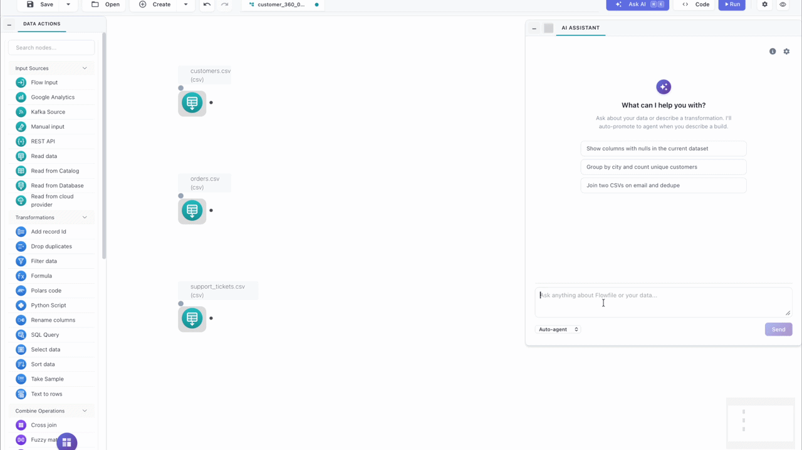
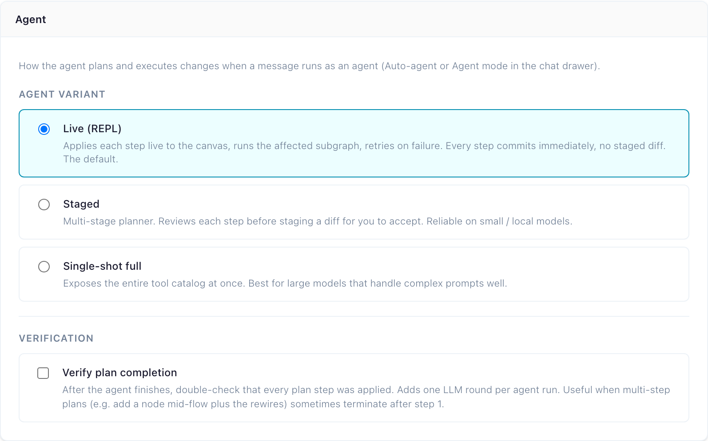
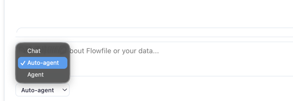
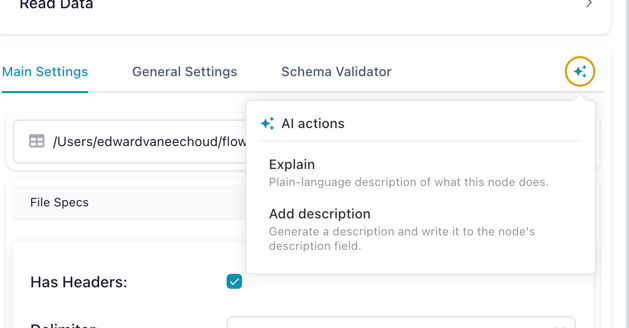
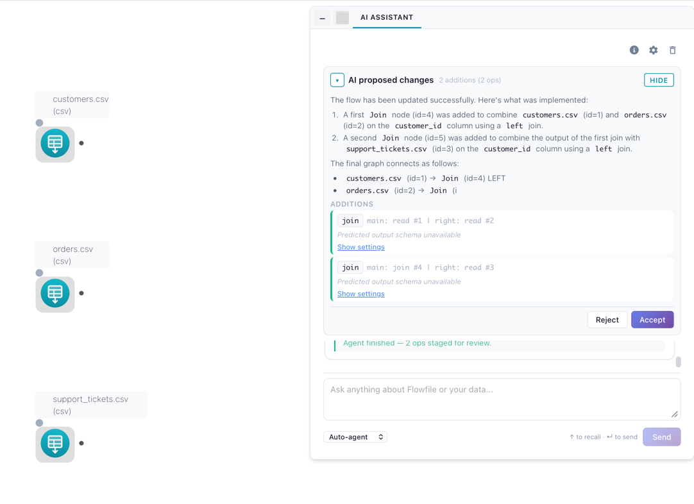

AI Assistant
Flowfile integrates with LLMs to help you build, document, and debug pipelines in plain language. Describe a transformation and the agent builds it; ask the assistant to write the docs for a flow you just shipped; turn a red run into a one-paragraph diagnosis. Every suggestion is grounded in the live node graph, so the model references the columns and node types you actually have — not what it imagines.
Not in Flowfile Lite
The AI Assistant requires the full desktop/server build. The browser-only Flowfile Lite edition does not include any AI features.

How a change lands depends on the surface:
- Stage-and-review (
StagedandSingle-shot fullagent variants, Cmd+K) bundles edits into aGraphDiff. Nothing touches your flow until you click Accept; one accepted diff = one undo point. - Live (REPL) (default agent variant) applies each step immediately, runs the affected subgraph, and feeds the runtime observation back to the model. Failed steps are auto-undone; there is no staged diff.
- Inline ✨ actions skip the diff layer: Explain is read-only, Add description writes straight to the node's
descriptiononce streaming finishes, and Regenerate code shows the new snippet for manual copy-paste. - Read-only surfaces (Chat, Lineage Q&A, Fix With AI, Generate Documentation) never propose graph mutations.
No hosted Flowfile service — bring your own key (Anthropic, OpenAI, Google, Groq, OpenRouter, or a local Ollama), or run the built-in on-device model without a key. See Provider Setup.
Feature catalog
Chat (read-only Q&A)
Make sense of a flow without touching it. Ask in plain English — "What does node 5 do?", "Why is the join producing duplicates?", "Walk me through this pipeline." The model sees the node graph, settings, and predicted schemas of the focused flow, and grounds answers in those. Chat never edits the graph.
Pin attention by selecting one or more nodes before sending, or by adding @flow to pin the whole graph (the default when nothing else is selected). Each chat call streams tokens over SSE with periodic keepalives so long thinking doesn't look like a hang.
Agent (multi-step builder)
Describe an end-to-end pipeline in one sentence and the Agent builds it — reading the file, joining the lookup, aggregating, all in order. Switch the drawer toggle to Agent, type something like "Read sales.csv, filter to Q4, join with customers on customer_id, aggregate revenue by month", and the agent walks the plan one tool call at a time.
The Agent variant picker under Settings → AI → Assistant selects execution mode (greyed out while On-device AI is the provider, with a note explaining that the agent needs a tool-capable provider):
- Live (REPL) (default) — each step applies immediately, the affected subgraph runs (Performance) or samples (Development), and the runtime observation feeds back to the model. Failed steps auto-undo and retry. No diff to accept — the canvas is the running record. Higher latency per step because each one does real work.
- Staged — small/local-model-friendly. A tightly-scoped state machine makes one decision per LLM round and bundles proposals into a
GraphDifffor Accept (atomic, one undo point) or Reject with an optional note that becomes context for the next attempt. - Single-shot full — big-model mode (the provider's strongest tool-capable model for the
agent_complexsurface). Exposes the full tool catalog in one call. Same staged-diff review flow.
The Verify plan completion checkbox adds one extra LLM round after the agent decides it's done, to walk its plan as a checklist — catches multi-step plans that terminate after step 1.

Every variant shows fine-grained progress ("Step 1/4: classifying intent", etc.) and supports follow-up messages after completion. Internals: AI Integration Architecture.
Auto routing (chat ↔ agent)
With the drawer mode toggle set to Auto (default), each message hits a lightweight intent classifier first. Clear editing intent ("add a filter for Q4 orders") auto-promotes to the Agent with a banner explaining the switch; pure questions stay in chat. The classifier runs on a small fast model (Haiku / Flash / 4.1-mini) so the round-trip is nearly invisible. Pin to Chat or Agent explicitly to bypass routing.

Cmd+K command palette
Quick edits without a conversation. Hit ⌘K / Ctrl+K, type a single instruction ("add a sort node by date desc"), and the AI stages a GraphDiff for review. Same staging/diff/accept machinery as the Agent.
Inline ✨ actions on a node
Single-node fixes from the node's ✨ popover:
- Explain — streams a plain-language description of what the node does in context. Read-only.
- Add description — generates a one-sentence imperative description and writes it directly to the node's
descriptionfield. Undo to revert. - Regenerate code (code-bearing nodes only:
polars_code,python_script,sql_query) — rewrites the snippet and streams it to the drawer for manual copy-paste. Existing code is never overwritten automatically.
All three are read-only at the LLM layer (no tool-calling), so the model cannot propose graph mutations through this surface.

Formula and join-key autocomplete
Background completion while editing Formula or Join settings — formula suggestions reference the actual upstream schema; join-key suggestions pair columns by name and type. Short timeout keeps the panel responsive; on timeout, parse error, or hallucinated columns it falls back to static completions and marks the result as degraded.
Ghost-node suggestions
Hover over an empty edge stub off a node to see instant next-step suggestions ("filter, join, aggregate"). Tuned for sub-second responses; Anthropic's Haiku is the canonical default.
Lineage Q&A
Debug intermittent failures or perf regressions across runs without scrolling the run report. In the lineage panel ask "Why did node 5 fail in the last 3 runs?" or "Which nodes have been getting slower?". The model gets the last N runs' metadata (start/end times, success/failure, per-node runtimes and errors) plus the live flow schema. Scope to a node or the whole flow; answers stream.
"Fix With AI" on a failed run
When a node fails, the run report's Fix With AI button streams a diagnosis — what went wrong, the input schema, what the error implies, and a suggested fix. Offered as text so you stay in control; for automated application, hand the same report to the Agent.
Generate Documentation
Streams a markdown spec for every node (what it does, input/output schemas, key settings). Drop into a wiki, README, or runbook.
Diff preview & accept/reject
Cmd+K and the Staged / Single-shot full agent variants route edits through a GraphDiff review:
- The diff panel renders bundled changes — added nodes, modified settings, deleted edges — next to the live canvas.
- Accept applies atomically as one undo point. Hit Undo and the whole diff reverts.
- Reject discards the diff. For agent sessions, the reject reason (free-text) becomes context for the next round, so you correct course without retyping the prompt.
- Drift detection: if you edit the canvas manually while a diff is pending, the agent pauses and asks you to Resume or Discard rather than silently applying over your changes.
The Live (REPL) variant and Inline ✨ actions skip this layer. Drift detection still protects staged variants if you switch between them mid-session.

What flow data is shared with the LLM
Each surface sends a context-aware slice of the live FlowGraph plus the provider and model defaults from Settings → AI.
Default — sent on every call
- Subgraph structure: BFS upstream walk from the focused/pinned node(s). Per node:
node_id,node_type, settings (column names, file paths, formulas, code blocks), and the predicted output schema when one can be computed without running the node. - The whole flow when nothing is focused — chat auto-pins
@flowby default. - Recent run metadata (Lineage Q&A only): start/end times, success/failure, per-node runtimes and errors for the last N runs (capped at 50). Not sent on other surfaces.
Never sent — by construction
- Raw data. Settings and predicted column types only — never row values.
- Database / cloud-storage contents. Predicted schemas only; never bytes behind a CSV, S3 object, or DB table.
- Your provider API key. Fernet-encrypted in the Flowfile DB; decrypted only inside the request to the provider, never echoed into the prompt.
- Other users' flows or sessions. Each session is scoped to one user + one
flow_id.
What you control
In the drawer, per conversation:
- Focus / pinning — select nodes on the canvas before sending to scope the prompt to that subgraph (BFS upstream); add
@flowin the message to pin the whole graph (default when nothing else is selected). - Send mode — Chat, Agent, or Auto (see Auto routing).
- Provider and model — the gear button is a quick switcher for the same default set under Settings → AI; changing it here changes it for every AI feature.
Under Settings → AI → Assistant, for every AI feature on this device:
- Default provider and model, plus an optional cheaper model for simple tasks (schedule text, settings autocomplete).
- Agent variant — Live (REPL), Staged, or Single-shot full (see Agent).
- Verify plan completion — extra LLM round at the end of an agent run for self-check.
These preferences are saved in the browser or desktop app, not per flow, so they follow you across flows on the same device. API keys are saved on the server for your account (see Provider Setup).
Where to next
- Provider Setup (BYOK) — pick a provider, plug in a key, set per-surface model preferences.
- AI Integration Architecture — for developers extending the AI subsystem or debugging model behavior.